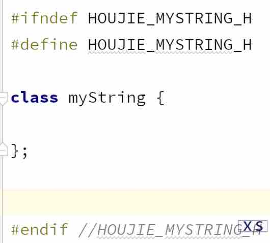
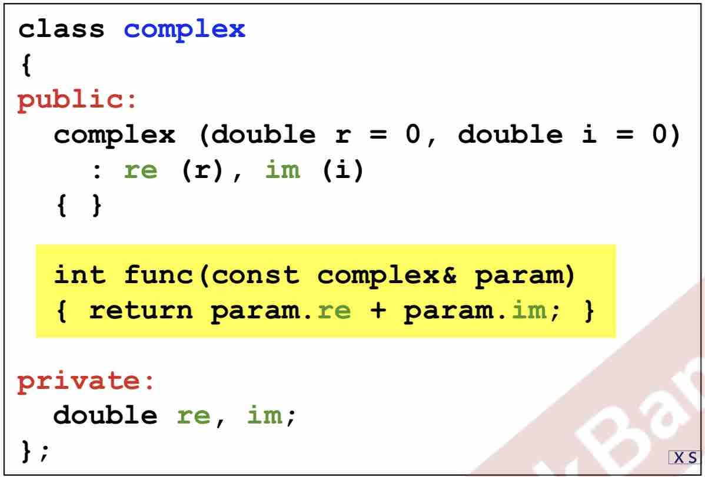
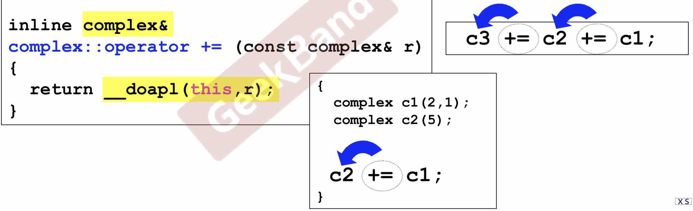
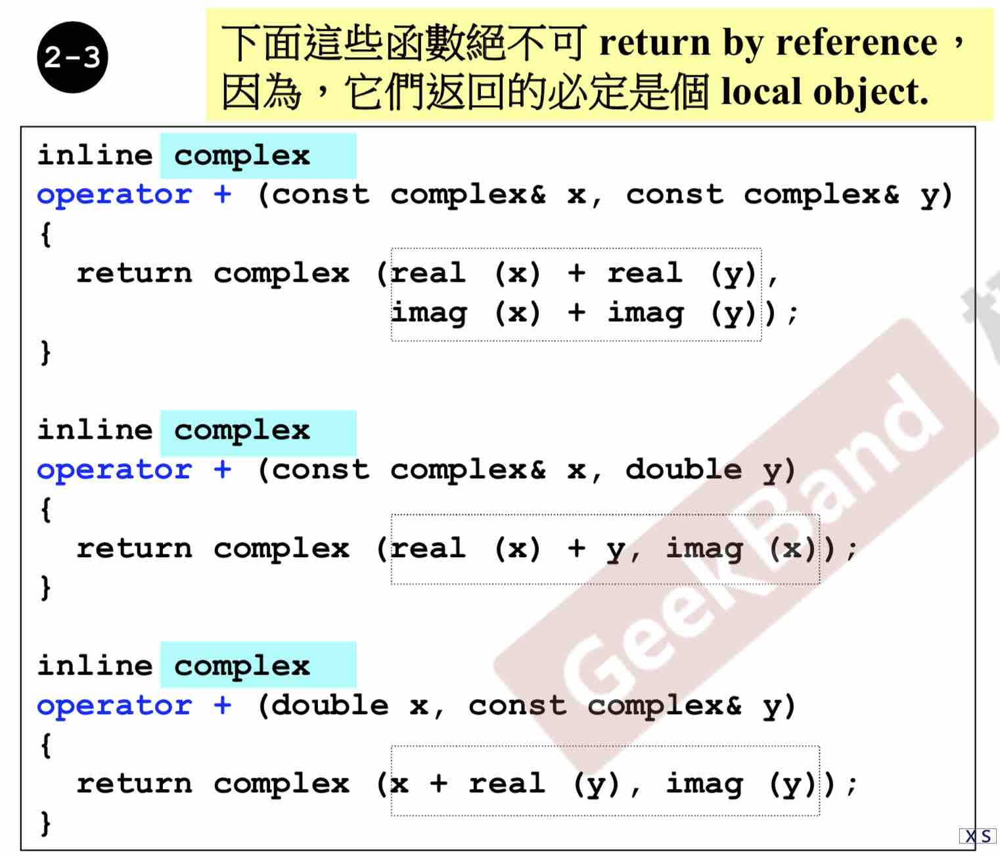
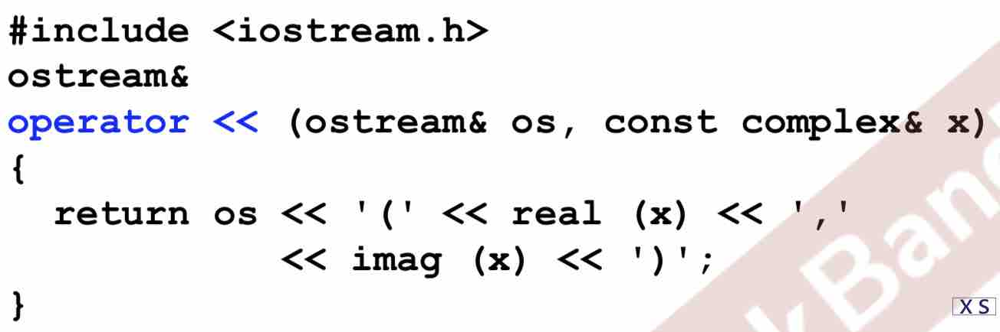

舍友给的C++资料。谢谢琪琪。做个笔记。
1 简介
2 头文件与类声明
//比如这个是类Complex的头文件：
#ifndef __COMPLEX__
#define __COMPLEX__
...
#endif
我发现在Clion新建一个类会自动生成的：
其中HOUJIE是我这个项目的名字~
3 构造函数
inline函数，在class body内定义完成， 比较快 比较好。但由于 你要写的函数太复杂，很难将她变成inline。而且就算你把函数写在了class里，是不是inline函数仍由编译器决定。
- 在class body外的函数定义（仅在body内声明一下[这时候还不用加
inline]），可以用inline关键字定义，但也只是告诉编译器，你尽量把它变成inline
- 在class body外的函数定义（仅在body内声明一下[这时候还不用加
构造函数
class complex{ public: complex(double r=0, double i=0) :re(r), im(i)//初值列。一定要用。赋初值，速度更快。不这样就相当于没赋初值。 { } //构造函数还需要干啥写在这里 }关于overloading
complex(double r=0, double i=0){} complex(){} //可以吗？不可以，因为上一个函数有默认值。两个参数都有默认值，就是可以都不传入，因此冲突
4 const 传值、传引用
构造函数放在private里：单例模式（别人不能再用构造函数了，只构造一个实例
不改变函数的数据：加
const!!（函数名后面加）double real() const {return re;}
为啥要尽量加const?
类C里的函数f不加const，使用者声明一个const的C实例时，再调用f。编译器会报错。
参数传递尽量传Reference
- Reference to const: 传了引用（速度变快），还不会改变数据内容。–>如果后面要改变传进来的这个const变量，编译器就会报错
返回值也尽量传reference（细节，影响效率
friend 友元
朋友是打开封装的一个大门，取数据可以用函数（慢），也可以用朋友来直接拿。
同class的各个object互为友元—》这就可以解释为什么，类的成员函数可以直接取同class的对象的数据：
5 操作符重载、 临时对象
- 所有成员函数都有个隐含的this参数，编译器决定了它的位置


返回值其实可以设成void，为啥设成reference呢？
使用者连串使用的时候， 返回值是reference就起到作用了。 c1加到c2上， 并会让整个式子返回c2的引用。
怪不得一整条的式子也会有一个值，妙啊。
返回的是一个object，绝对不能返回reference
上面返回 reference的例子是，两个数加完存到第一个数里。这次是两个东西加起来，却没有地方存。return了一个临时变量
<< 这个操作符想重载只能写成全局函数。Example：

传的参数os可以加&吗？
可以。能传&尽量传&。
os为啥不加
const？ os会改变吗？其实， << 这个输出符号就是把右侧的东西丢到 os 里。所以os是不能加&的！
这个函数返回值为啥不写
viod而写ostream你想想你天天用
cout << A << B啊！这样就可以连用操作符了啊返回值写 ostream 还是 ostream&?
优先考虑&。看一下返回的是新object吗？
返回os，不是新的。可以返回&
- 我天天用的cout其实是一个对象（ostream类型）
6 小节
总结一下一好的类设计：
- 构造函数要会用 Init 的快速赋值方法
- 函数返回加不加const
- 我对这一点还是理解不够深入。
- 这个函数不改变data 就要加const
- 参数尽可能地加&
- return尽可能地加&
- return的如果不是local object(不是这个函数创建的东西)，那就加&
- 数据要放在private里
告一段落。第6集是总结。可以重刷。
Problem：
[ ] 函数的参数又加const又加&，并在函数里改这个参数的值。会报错？
答：果然报错了。如果要改它的值就别加着加那的了啊孩子。
7 Big Three 拷贝构造 拷贝赋值 析构
class with pointer members 必須有 copy ctor 和 copy op=
如果类C有指针。还用默认的拷贝赋值，就叫浅拷贝，这时候：
a和b本来都有thier own指针 point to 一块地，这时候执行 aaa=bbb:
- bbb指向的那一块成为孤儿–》内存泄露
- bbb也指向了aaa指向的那块地，a、b会一条命
由上一条得出拷贝赋值的写法：
inline ClassA& ClassA::operator=(const ClassA& bbb){if (this == &aaa)
return *thisbbb释放自己的指针
申请aaa一样大的区域
赋值
return *this;
}
第0条特别重要。
最后看一下我自己写的就知道遇到的问题有多多了！
#include<iostream>
#ifndef HOUJIE_MYSTRING_H
#define HOUJIE_MYSTRING_H
class myString {
myString(const char* str = 0);
myString(const myString& oneString);
~myString();
//myString& const operator=(const myString &oneStr);//在body里声明就不用加myString::了
myString& operator=(const myString &oneStr);//不能加const 为啥？
// ostream&operator<<(const myString &oneStr);❌记住"<<"的重载在函数外！
// char* const getData(){ //const放函数名后
char* getData() const {
return m_Data;
}//这个方法是为了 一会儿重载 << 能取到数据
private:
char* m_Data;
};
inline myString::myString(const char *str=0) {//这里参数不赋初值！不然会报错：redefinition of default argument
if(str){
m_Data = new char[strlen(str)+1];
strcpy(m_Data,str);
} else{
m_Data = new char[1];
m_Data[0] = '\0';
}
}
inline myString::~myString() {
delete m_Data;
}
inline myString::myString(const myString &oneString) {
m_Data = new char[strlen(oneString.m_Data)+1];
strcpy(m_Data,oneString.m_Data);
}
inline myString& const myString::operator=(const myString &oneStr) {
// if(this == oneStr)❌
if(this == &oneStr)//this是一个指针！
// return this;❌
return *this;
// delete this.m_Data;❌❌❌❌❌ 一定不要忘了[]
delete[] m_Data;
this->m_Data = new char[strlen(oneStr.m_Data)+1];//我使用.语法自动变成->语法。为什么？
strcpy(this->m_Data,oneStr.m_Data);//其实this->全可以省略。只写m_Data就好
// return this; ❌
return *this;//是*this! 这也解释了为啥 this后要跟-> this是一个指针
}
//inline ostream& myString::operator<<(const myString &oneStr) {❌ 1不用加类名，人家是根据参数类型来处理的
//2.不加inline 3.有一个ostream参数 4.记得要#include<iostream.h>
ostream& operator<<(ostream& os, const myString &oneStr) {
return os <<"我是一个string:"<< oneStr.getData();;
}
#endif //HOUJIE_MYSTRING_H
简简单单的一个类，里面就有这么多问题！
函数声明的时候参数设了默认值。定义的时候就不用写了。
[ ] << 为啥不能在body里重载来着？
答：先看对
+重载，重载后就可以用myString + myString语法了。如果把<<重载成一个成员函数，就是说可以用myString << myString这种操作了。而我们习惯的是cout在左边，要输出的内容在右边。所以不要把 << 重载成成员函数。[x] 重载= 为啥不加const?
myString& operator=(const myString& str)这个函数里其实有个隐含参数 this, 而 this 是要改变的。改变了数据就不能加const啦~
道阻且长！
8 栈 堆 内存管理
local object 在作用域中，存在Stack里。自动销毁
static loacl object不会销毁new的对象存在 heap 里。不会被销毁。需要手动delete- 这一课博大精深。复习请看视频！
9 复习课
10 Static
static
static函数只能调static属性。
单例模式可以借助这个实现：
A& A:: getInstance(){ static A a; return a; }
11复合委托继承
♦Composition：复合 ,has-a
♢Delegation：委托
pImpl(pooint to Implementation)：编译防火墙。右边的代码（代理）怎么改都不影响左边。
延伸：reference counting 共享特性。
copy on write: ABC共享一个东西。A想改一下，就给A一个副本让A去改。BC继续共享。
▷Inheritance：继承
与复合一样，构造的时候先构造别人，再构造自己（容器）的。 析构的时候先析构外层的自己，再析构里面的。因为自己是包着继承（复合）类的全部内容。
继承搭配虚函数才完美
12 虚函数
UML图里斜体表示抽象
[x] 继承和复合同时用，构造和析构的顺序是怎么样的呢？手写测试
B has an A. A构造 B构造 B析构 A析构
C is an A. A构造 C构造 C析构 A析构
D is an A,having a Z A构造 Z构造 D构造 D析构 Z析构 A析构
可以看出，D继承A，里面复合一个Z的时候。先构造A，再构造Z，最后构造D自己。析构完全相反。